관리 메뉴 (42개)
- PC+모바일 이미지 NEW
- PC 동영상 (10편)
- 폰 동영상 (4편)
- 개요
- 사이드바 개편 NEW
- 페이지 설명 배너 NEW
- 로그인 수정 NEW
- 홈
- 1. 대시보드
- 2. 메뉴 안내 NEW
- 콘텐츠 관리
- 3. 후기 관리
- 4. 후기 검수
- 5. 병원이미지
- 6. 광고 관리
- 6-1. 광고·디스플레이 설정 NEW
- 7. 카테고리
- 신청 관리
- 8. 병원등록신청
- 9. 광고등록신청
- 등록 관리
- 10. 의사 등록
- 11. 간호사 등록
- 12. 약사 등록
- 13. 환자 등록
- 14. 직원 등록
- 15. 의약품 등록
- 16. 예약 등록
- 엑셀 관리
- 17. 엑셀 대량등록
- 18. 검색/다운로드
- 사용자/소통
- 19. 회원 관리
- 20. 메일함
- 21. 상용구 관리
- 22. 서명 관리
- 23. 계정 설정
- 24. 메일서버(외부)
- AI / 자동화
- 25. AI 설정
- 26. 자동 테스트
- 27. 자동 테스트 v2
- 사이트 설정
- 28. 테마 설정
- 29. 고급 테마
- 30. 네비게이션
- 31. 에디터 설정
- 32. 점검 모드
- 33. 확장 계획
- 관리/도움말
- 34. 관리자 관리
- 35. 마법사 가이드
- 36. 자동 매뉴얼
- 시술/과금 관리
- 37. 시술 마스터 NEW
- 38. 병원별 시술 NEW
- 39. 시술 랭킹 NEW
- 프로젝트 관리
- 40. 기획서 대시보드 NEW
- 41. 프로젝트 현황 NEW
- 42. QA 대시보드 NEW
화면 캡처 — PC + 모바일
주요 페이지를 PC(1280px)와 모바일(412px) 뷰포트로 각각 캡처한 이미지입니다. 클릭하면 확대됩니다.
프론트엔드 (사용자 화면)
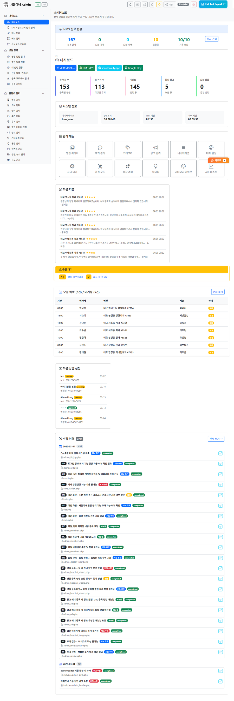
PC — 대시보드
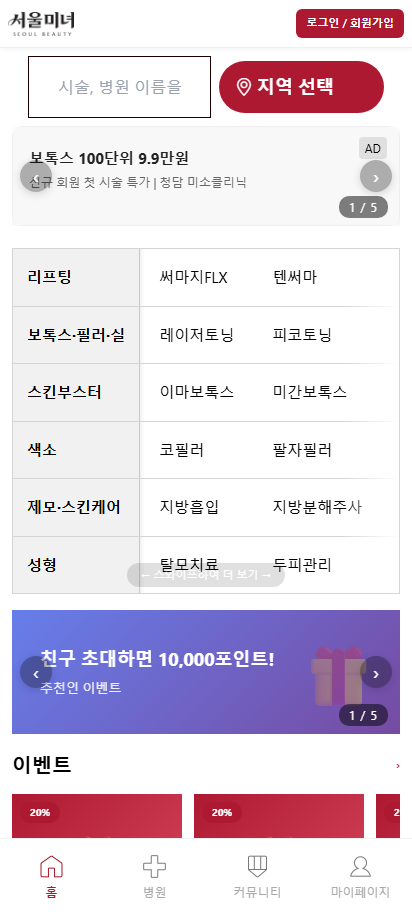
모바일 — 메인 홈

PC — 후기 관리
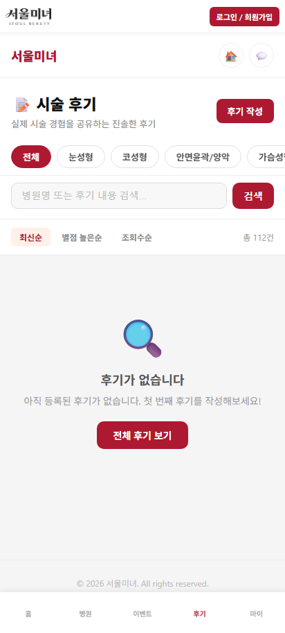
모바일 — 후기 목록
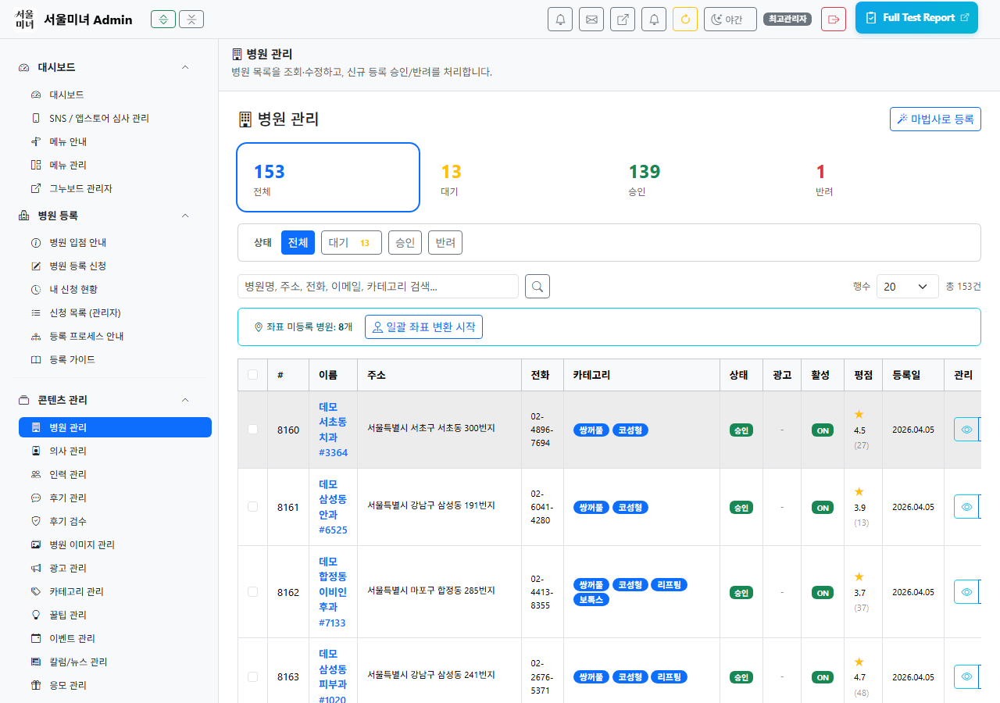
PC — 병원 관리
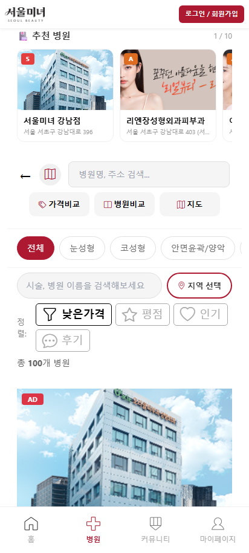
모바일 — 병원 목록
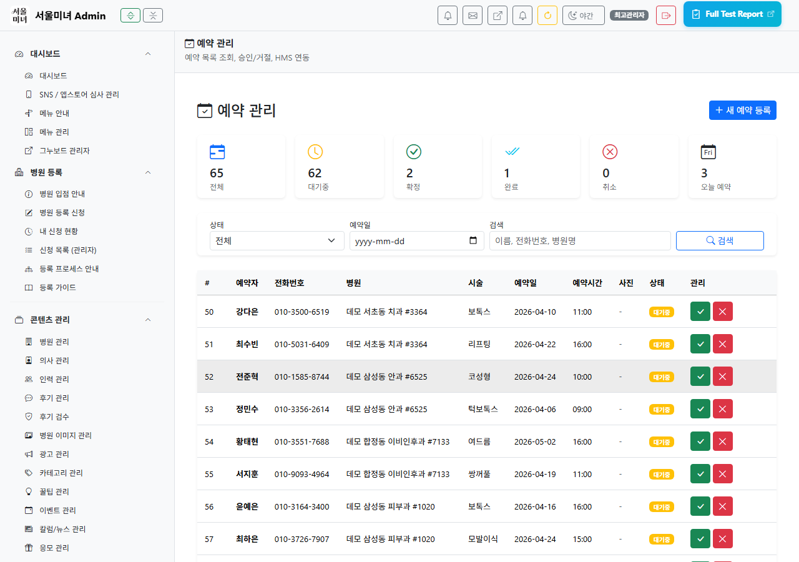
PC — 예약 관리
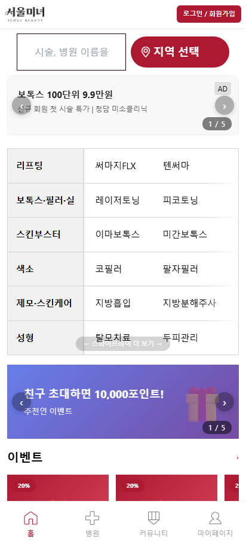
모바일 — 예약하기

PC — 광고 관리
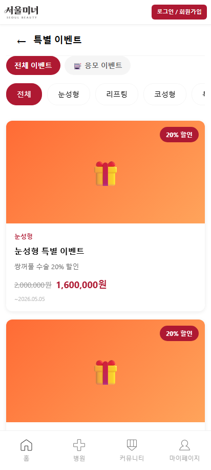
모바일 — 이벤트
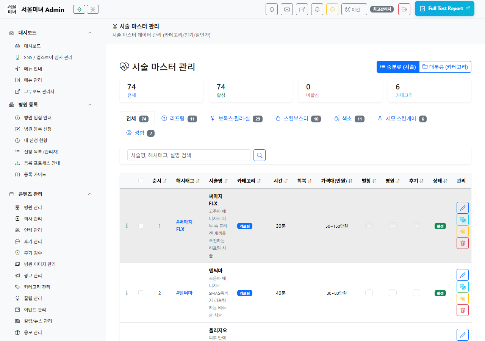
PC — 시술 관리
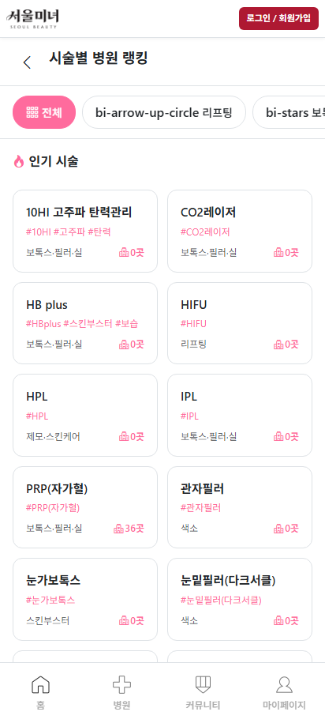
모바일 — 시술 랭킹

PC — 회원 관리
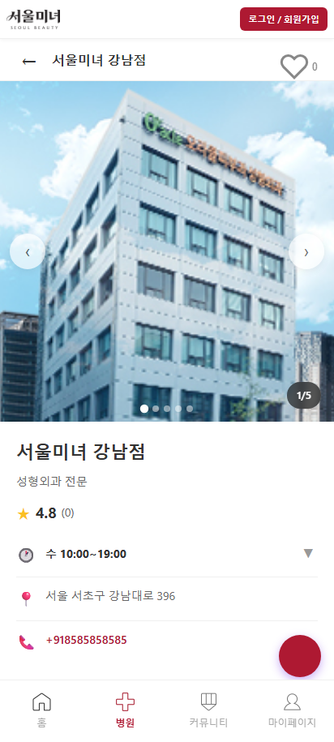
모바일 — 병원 상세
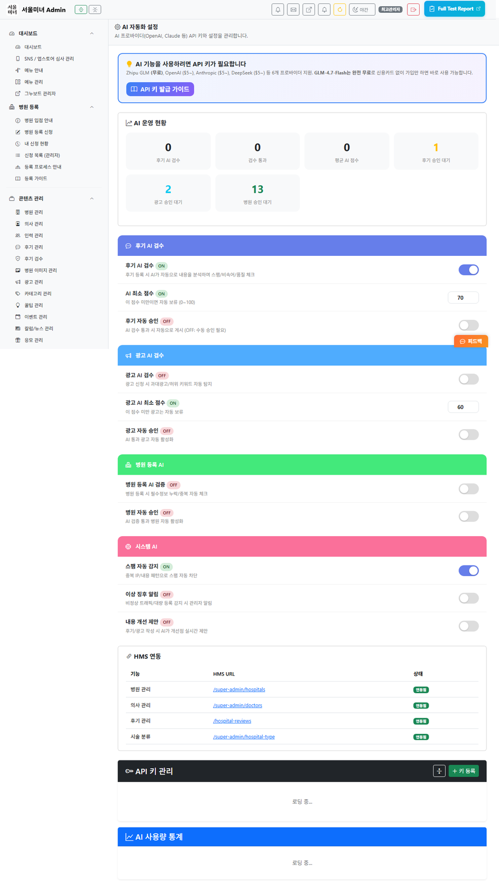
PC — AI 설정
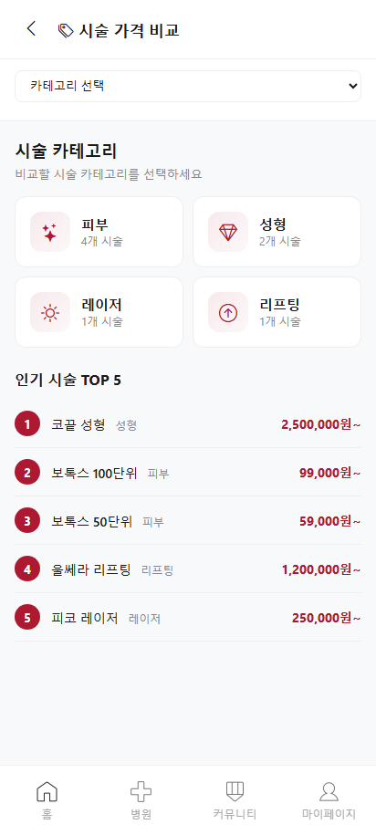
모바일 — 가격 비교
관리자 모바일 뷰
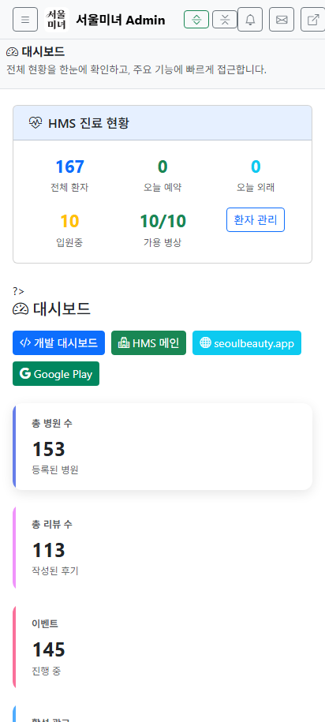
대시보드
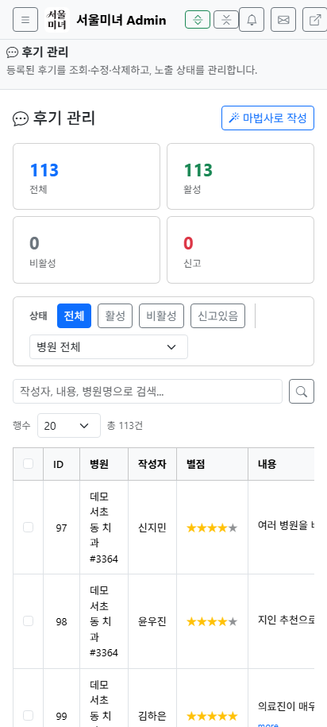
후기 관리
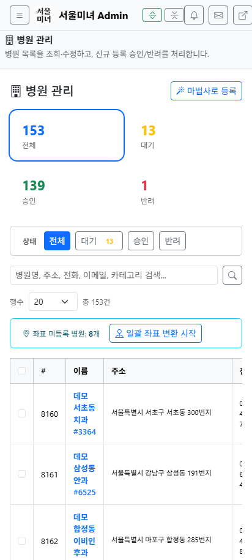
병원 관리
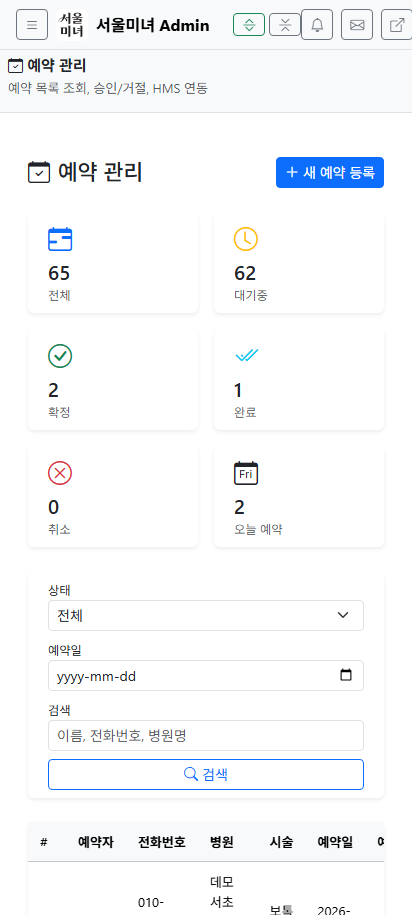
예약 관리
PC 동작 동영상 (10편)
1. 로그인 → 대시보드
2. 사이드바 탐색
3. 후기 관리
4. 병원 관리 + 신청
5. 광고 설정 (7탭)
6. 예약/상담
7. 회원 + 메일
8. AI 설정
9. 시술 관리
10. 개발 피드백
모바일 동작 동영상 (4편)
1. 모바일 브라우징
2. 상세 + 예약
3. 후기 + 이벤트
4. 관리자 모바일
관리자 시스템 개요
서울미녀 관리자 패널은 서울미녀 프론트엔드의 모든 콘텐츠와 설정을 관리합니다. Bootstrap 5.3 기반 반응형 UI에 다크/라이트 모드를 지원하며, 역할 기반 접근 제어(RBAC)로 보안을 강화했습니다.
2026-03-27 업데이트: 시술 마스터 관리(대분류/중분류 CRUD, 드래그 정렬), 병원별 시술 배정, 시술 랭킹, 기획서 대시보드, 프로젝트 현황, QA 대시보드가 추가되었습니다. 총 메뉴 수가 36개 → 42개로 확대되었습니다.
접근 URL
/gangnamunni/dashboard.php인증
세션 기반 + RBAC 권한
세션 기반 + RBAC 권한
레이아웃
상단바(50px) + 사이드바(220px)
상단바(50px) + 사이드바(220px)
공통 레이아웃 시스템
| 구성요소 | 파일 | 설명 |
|---|---|---|
| 공통 헤더 | includes/admin_header.php | Bootstrap 5.3 CDN, 상단바, 사이드바 렌더링, 메뉴 설명 배너 |
| 공통 푸터 | includes/admin_footer.php | Bootstrap JS, 테마 토글, 공통 JS 함수 |
| 인증 | includes/admin_auth.php | check_permission(), require_permission() 함수 |
| 업종 추상화 | includes/industry_terms.php | term() 함수로 업종별 용어 변환 |
| 캐시 초기화 | clear_cache.php | 상단바 버튼 AJAX 호출 |
// 새 관리 페이지 생성 방법 $admin_page_title = '페이지 제목'; $admin_current = 'menu_key'; // 사이드바 활성 메뉴 $admin_extra_css = ['custom.css']; // 페이지별 CSS $admin_extra_js = ['custom.js']; // 페이지별 JS include 'includes/admin_header.php'; // ... 페이지 내용 ... // $menu_descriptions 배열에 key가 있으면 페이지 설명 배너가 자동 표시됨 include 'includes/admin_footer.php';
NEW 로그인 수정 (2026-02-26)
로그인 페이지의 fillLogin() 자동완성 함수 버그가 수정되었습니다.
수정 내용
| 항목 | 수정 전 | 수정 후 |
|---|---|---|
| 자동 로그인 제출 | form.submit() |
button[name="login"].click() |
| 문제점 | name 속성 없이 제출되어 PHP에서 POST 판별 불가 | login 버튼 클릭으로 name=login 값 포함 전송 |
테스트 계정
| 계정 | ID | PW | 역할 |
|---|---|---|---|
| 최고관리자 | admin | admin123 | super_admin |
| 테스트용 | test | test1234 | editor |
로그인 버튼 아래에 역할별 차이점 설명이 추가되었습니다. super_admin은 모든 메뉴 접근 가능, editor는 콘텐츠 관리 메뉴만 접근 가능합니다.
콘텐츠 관리
03 후기 관리 (admin_reviews.php)
병원 후기 보기, 편집, 승인/거부 및 일괄 처리 기능을 제공합니다.
후기 관리 — 목록, 상태 필터, 승인/반려 처리
기능 목록
- 후기 목록: 검색, 필터(병원, 상태, 기간), 정렬 기능
- 상태 관리: 대기(pending), 승인(approved), 거부(rejected) 상태 전환
- 편집 모달: 인라인 편집 모달로 후기 내용 수정
- 일괄 처리: 체크박스 선택 후 일괄 승인/거부/삭제
- AI 검증: AI 품질 점수 및 스팸 탐지 결과 표시
- Quill 에디터 연동: 리치 텍스트 후기 에디터 (이미지 포함)
승인 워크플로우
✍️
후기 작성
→
⏳
대기 상태
→
🤖
AI 자동 검증
→
👤
관리자 확인
✅ 자동 승인 조건
AI 점수 80점 이상 → 자동 승인 가능 → 공개
⚠️ 수동 검토 조건
AI 점수 60점 미만 → 관리자 수동 확인
❌ 거부 처리
관리자 거부 → 비공개 처리
06 광고 관리 (admin_ads.php)
병원 광고 등록, 검수, 노출 관리를 위한 페이지입니다.
광고 관리 — 배너 등록, AI 검증, 통계
기능 목록
- 광고 CRUD: 제목, 내용, 이미지, 링크, 노출 기간 관리
- AI 의료광고법 검증: 등록 시 자동으로 의료광고법 위반 여부 검사
- 금지어 검출: 법정 금지 문구 자동 하이라이트
- 노출 순서: 우선순위 기반 광고 순서 설정
- 통계: 노출수, 클릭수, CTR 통계 확인
- DALL-E 이미지 생성: AI로 광고 이미지 자동 생성
07 카테고리 (admin_categories.php)
시술 카테고리를 관리합니다. SVG 아이콘과 이모지를 지원하는 피커 UI를 제공합니다.

카테고리 — SVG 아이콘 피커, 드래그 정렬
기능 목록
- 카테고리 CRUD: 이름, 설명, 아이콘, 활성 상태 관리
- SVG 아이콘 피커: 썸네일 그리드에서 SVG 아이콘 선택
- 이모지 피커: 8탭 264종 대형 이모지 선택 UI
- 활성/비활성 토글: 카테고리별 즉시 활성 상태 변경
- HMS 연동: hospital_type 테이블과 양방향 동기화 (12건)
- 정렬: 드래그&드롭으로 카테고리 순서 변경
팁: category_icons.php에서 SVG 아이콘이 흰색 원형 배경 위에 렌더링됩니다. 새 아이콘 추가 시 이 파일도 함께 수정하세요.
신청 관리
등록 관리 (마법사 7종)
엑셀 관리
사용자 / 소통
19 회원 관리 (admin_members.php)
전체 회원 검색, 필터, 등급 변경, 메모, 차단 등을 관리합니다.
회원 관리 — 목록 검색, 상태 변경, 등급 관리
기능 목록
- 회원 검색: 이름, 이메일, 전화번호로 실시간 검색
- 필터: 등급, 가입일, 상태별 필터링
- 등급 변경: VIP, 일반, 휴면 등 회원 등급 설정
- 관리자 메모: 회원별 관리자 전용 메모 기능
- 차단/해제: 문제 회원 접근 차단 및 해제
- HMS/Gnuboard 동기화 상태: 동기화 상태 확인
현재 회원 수: g5_member=87, users=262, patients=90, member_sync=87
20 메일함 (admin_mail.php)
Gmail 스타일 3컬럼 레이아웃의 메일 관리 시스템 v4입니다.

메일함 — Gmail 스타일 3컬럼 UI
기능 목록
- 3컬럼 레이아웃: 폴더 목록 | 메일 목록 | 메일 내용
- 작성 오버레이: 1050px 작성 오버레이 + 전체화면 모드
- IMAP 수신: SSL 993포트 IMAP 수신 (폴더: INBOX, Sent, Drafts, Junk, Trash, Archive)
- SMTP 발송: STARTTLS 587포트 SMTP 발송 + 첨부파일(multipart/mixed)
- 인라인 이미지: 재귀 MIME 파싱, CID -> data URI 자동 변환
- 일괄 처리: 전체선택/선택삭제/읽음/안읽음 일괄 변경
AJAX 액션
unread_counts | list | read | delete | bulk_delete | bulk_seen toggle_seen | send | get_signature | save_signature get_templates | save_template | delete_template | set_per_page
AI / 자동화
사이트 설정
관리 / 도움말
개발 도구
변경 이력
| 날짜 | 버전 | 변경 내용 |
|---|---|---|
2026-03-27 |
v3.0 | 시술 마스터 관리 (대분류/중분류 CRUD, 드래그 정렬), 병원별 시술 배정 (가격 관리, 기본값 폴백), 시술 랭킹 시스템, 기획서 대시보드 (CSV 탭 관리), 프로젝트 현황/QA 대시보드, 메뉴 수 36개 → 42개 확대 |
2026-02-26 |
v2.0 | 사이드바 메뉴 그룹화 개편 (5개 구분선 + 접기/펼치기), 메뉴 안내 페이지 신규, 페이지 설명 배너 시스템 (36개), 로그인 fillLogin() 버그 수정, test 계정 추가, 메뉴 수 16개 → 36개 확대 |
2026-02-25 |
v1.5 | AI 자동화 5단계 구현, 멀티 프로바이더, 이벤트/응모 마법사, 이미지 에디터 |
2026-02-24 |
v1.4 | 후기 에디터 v2 + 승인 워크플로우 |
2026-02-23 |
v1.3 | 등록 마법사 7종 + 엑셀 Import/Export (E2E 78/78 PASS) |
2026-03-29 |
v3.1 | 광고설정 리디자인(7탭+AJAX+기기프리뷰) + 디자인토큰/테마/디자인모드 프리뷰 추가 + 광고 ON/OFF 버그 수정 + iOS 네이티브앱 크래시 해결 |
2026-02-11 |
v1.0 | 초기 관리자 매뉴얼 16개 메뉴 작성 |